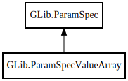

GLib.ParamSpecValueArray – gobject-2.0 Reference Manual
Packages
gobject-2.0
GLib
ParamSpecValueArray
ParamSpecValueArray
element_spec
fixed_n_elements
ParamSpecValueArray
Object Hierarchy:

Description:
[
CCode
( type_id =
"G_TYPE_PARAM_VALUE_ARRAY"
) ]
[
Version
( deprecated =
true
, deprecated_since =
"2.32"
) ]
public
class
ParamSpecValueArray
:
ParamSpec
Warning:
ParamSpecValueArray is deprecated since 2.32.
Namespace:
GLib
Package:
gobject-2.0
Content:
Creation methods:
public
ParamSpecValueArray
(
string
name,
string
nick,
string
blurb,
ParamSpec
? element_spec,
ParamFlags
flags)
Fields:
public
ParamSpec
?
element_spec
public
uint
fixed_n_elements
Inherited Members:
All known members inherited from class GLib.ParamSpec
@ref
finalize
flags
get_blurb
get_default_value
get_name
get_name_quark
get_nick
get_qdata
get_redirect_target
name
owner_type
ref_sink
set_qdata
set_qdata_full
set_value_default
sink
steal_qdata
unref
value_convert
value_defaults
value_type
value_validate
values_cmp